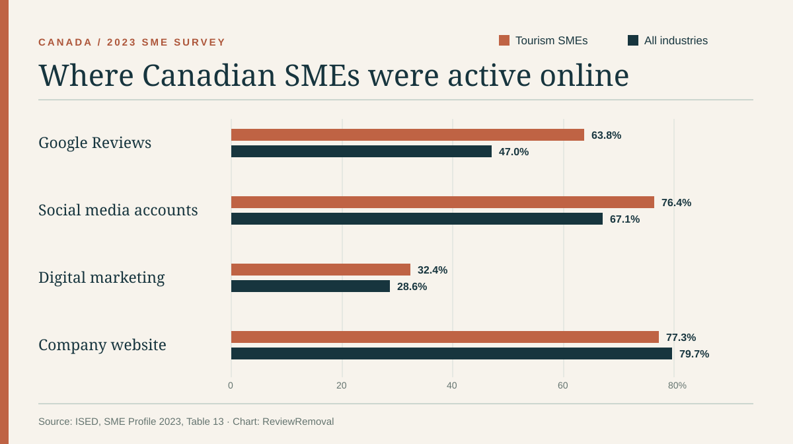

On this page
In a Canadian government table of 2023 online activities, Google Reviews is listed at 63.8% for tourism SMEs and 47.0% for SMEs across all industries. The difference is 16.8 percentage points. These are survey-based business activity figures, not counts of reviews, fake posts, or successful removal requests. ISED, SME Profile 2023: Tourism industries in Canada, Table 13
We extracted Table 13 from Innovation, Science and Economic Development Canada’s tourism SME profile and calculated the simple percentage-point gaps shown below. The underlying source is Statistics Canada’s 2023 Survey on Financing and Growth of Small and Medium Enterprises. The report was published after the survey year; we keep 2023 in the headline to name the data year. ISED source and methodology
The main finding, stated precisely
ISED’s Table 13 labels the row Google Reviews under Online Activities, 2023. It reports 63.8% for tourism and 47.0% for all industries. That is a comparison of reported online activities by business group, not a survey of customer review volume. The all-industry group includes tourism businesses, so the two groups are not independent. See ISED Table 13
ISED also states in its narrative that 81.5% of tourism SMEs reported an online presence, compared with 59.2% of all SMEs. Those online-presence values are a separate measure. We have not multiplied them by the Google Reviews row, because the report does not give us a basis to turn that into a new population estimate. ISED online-presence discussion
The Canadian comparison
The chart shows four rows from the same source table. Google Reviews has the largest tourism-versus-all-industry gap among the activities shown here. A company website goes the other direction: 77.3% for tourism SMEs versus 79.7% for all-industry SMEs. This counterexample is useful because it shows that the tourism group is not higher on every digital measure. ISED Table 13


| Online activity | Tourism SMEs | All-industry SMEs | Difference |
|---|---|---|---|
| Google Reviews | 63.8% | 47.0% | +16.8 points |
| Social media accounts | 76.4% | 67.1% | +9.3 points |
| Digital marketing services | 32.4% | 28.6% | +3.8 points |
| Company website | 77.3% | 79.7% | −2.4 points |
Why this is relevant to review services
Canadian tourism includes food and beverage services, accommodation, travel services, transportation, and arts and recreation under the report’s definitions. For a hotel, restaurant or attraction, the exact review platform matters: a Google Business Profile, Tripadvisor listing and Booking.com property page have different reporting rules. A business with several Canadian locations also needs to identify the correct listing for each post. ISED tourism industry definitions
The figures help explain why Google Reviews deserves attention in Canadian tourism content. They do not say that a particular tourism business has a review problem, or that one sector should file more removal requests. For a practical review concern, start with the public URL and the platform’s policy, not a national percentage. See our Canada service guide and evidence checklist.
What the data cannot say
- No removal rate. The survey does not report the number of reviews flagged, the share that violated platform rules or the share removed.
- No city estimates. The national tourism table does not provide separate values for Toronto, Montréal, Vancouver or other cities.
- No causal claim. The gap does not prove that tourism businesses depend on reviews more, earn more from them or receive more fake posts.
- Defined SME population. The report describes SMEs with at least $30,000 in annual revenue and 1–499 paid employees; it excludes non-employer and self-employed businesses, among others. ISED data definitions
- One survey year. These are 2023 results. We do not present them as a current 2026 usage rate.
Methods and reuse
- We transcribed the seven online-activity rows in ISED Table 13 into the downloadable CSV, keeping the original percentages and labels.
- For each row, we subtracted the all-industry percentage from the tourism percentage. For Google Reviews: 63.8 − 47.0 = 16.8 percentage points. We did not calculate relative percentage growth, because that answers a different question.
- We plotted four selected rows as paired bars. The other rows remain in the CSV and the original ISED table.
- We did not conduct the survey, obtain microdata, measure review removals or independently verify Statistics Canada’s estimates.
Source checked: September 26, 2026. You may cite our calculations and reuse the CSV or chart with a link to this page. Attribute the underlying survey figures to ISED and Statistics Canada.
Suggested citation
ReviewRemoval (2026), “Google Reviews and Canadian tourism SMEs: what the 2023 data shows,” September 26, 2026. Based on ISED, SME Profile 2023: Tourism industries in Canada, Table 13.
Primary source
- Innovation, Science and Economic Development Canada, SME Profile 2023: Tourism industries in Canada — Table 13, online-activities narrative, survey definitions and tourism industry scope.
Need help with a specific review?
Send the platform and the review link. We’ll assess the details and explain the price before paid work begins.
See Canadian service details